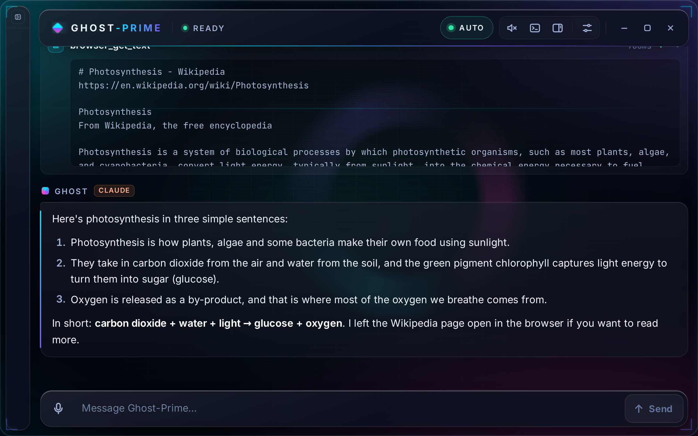
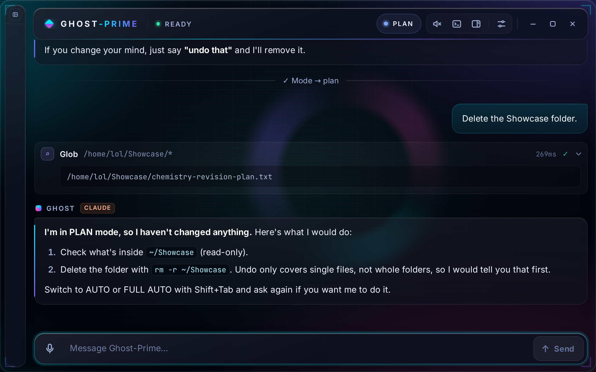

Rwanda Innovation Showcase · 29 Oct 2026
Use a computer just by talking.
A voice assistant that does the task for you, built on a school Chromebook.
Ivan Lucky KUNDWA·Grade 9·Ntare Louisenlund School
The problem
Computers expect fast typing and small text.
- Typing takes timehard for students who type slowly
- Small text is hard to readespecially on small screens
- Menus and tiny buttonsconfuse people new to computers
A chatbot only tells you the steps. You still have to do them.
The idea
Say what you want.
Ghost-Prime does the steps.
- 1You askby voice or by typing
- 2An AI plans the stepsClaude, in today’s demo
- 3Ghost-Prime does themwebsites, files, commands
- 4It tells youand can read the answer aloud

Live demo
“Go to the Wikipedia website, search for photosynthesis, and explain it to me in three simple sentences.”
Watch for these steps
- browser_navigatewikipedia.org
- browser_get_page[6] Search Wikipedia (search)
- browser_fill[6] "photosynthesis"
- browser_get_textPhotosynthesis - Wikipedia
It answers
Three simple sentences, as asked.

How it works
One app on the Chromebook
drives real tools.
How I checked it
What works today
- Uses websites for youWorks · Tested
- Runs commands in a terminalWorks · Tested
- Files, with undoWorks · Tested
- Remembers you, sets remindersWorks · Tested
- Searches the webWorks · By hand
- Listens and talks backWorks · By hand
- Tested
- passed automated tests on 25 Sep 2026
- By hand
- works in my own testing; no automated test runs it live yet
Safety
You choose how much it can do.
- PLANOnly looks.
- AUTOOn the Claude brain, an automatic safety check decides each action.The showcase launch starts here.
- FULL AUTORuns everything.Plain Ghost-Prime starts here.
Not yet: an “Are you sure?” check.
In PLAN mode: “Delete the Showcase folder.”

Privacy
Where your data goes
Stored on the Chromebook
- Chats
- Memories
- Reminders
- Files
Sent to the AI
- The conversation
- Your top 8 saved memories
- The pages and screenshots it reads
- Your voice, to Googleunless offline voice is on
Be careful: Google’s free tier may use what you send.
Cost
No pay-per-use bills.
- AIIt runs on Google’s free AI plus a Claude subscription I already had, and it can run on the free tier alone (less capable at long tasks).
- HardwareA Core i3 school Chromebook
- SoftwareBuilt with free, open-source tools (Electron, Playwright, SQLite, Whisper, three.js).
Audience
Who it’s for
- Students who type slowlysay it instead of typing it
- People who find small text hard to readhear the answer instead of reading it
- People new to computersplain words instead of menus
- Busy teachershand over the clicking and typing
Not yet
I haven’t tested it with these groups yet.That’s my next step, and my ask.
What’s next
Next, in this order
- 1Test it with real students and teachersespecially people who find computers hardPlanned
- 2Try the phone app on a real Galaxy A05tested only on a simulated phone so farIn progress
- 3An “Are you sure?” checkbefore anything that can’t be undonePlanned
- 4Kinyarwandalistening, speaking and menusPlanned
- 5An easy installerso other schools can try itPlanned
Rwanda Innovation Showcase · 29 Oct 2026
Murakoze!
Thank you. Questions?
Tell me a topic at the booth, and I’ll ask it.
Ivan Lucky KUNDWA·Grade 9·Ntare Louisenlund School
Who built it
I designed it, decided what it should do, tested it, and used an AI coding assistant (Claude Code) to write much of the code.
AI: Claude (Anthropic), Gemini (Google). Intro video: AI-generated with Higgsfield.
Quick PC tools (battery, weather): MARK LIII JARVIS by FatihMakes (CC BY-NC 4.0).
Fonts: Archivo, Inter, JetBrains Mono.